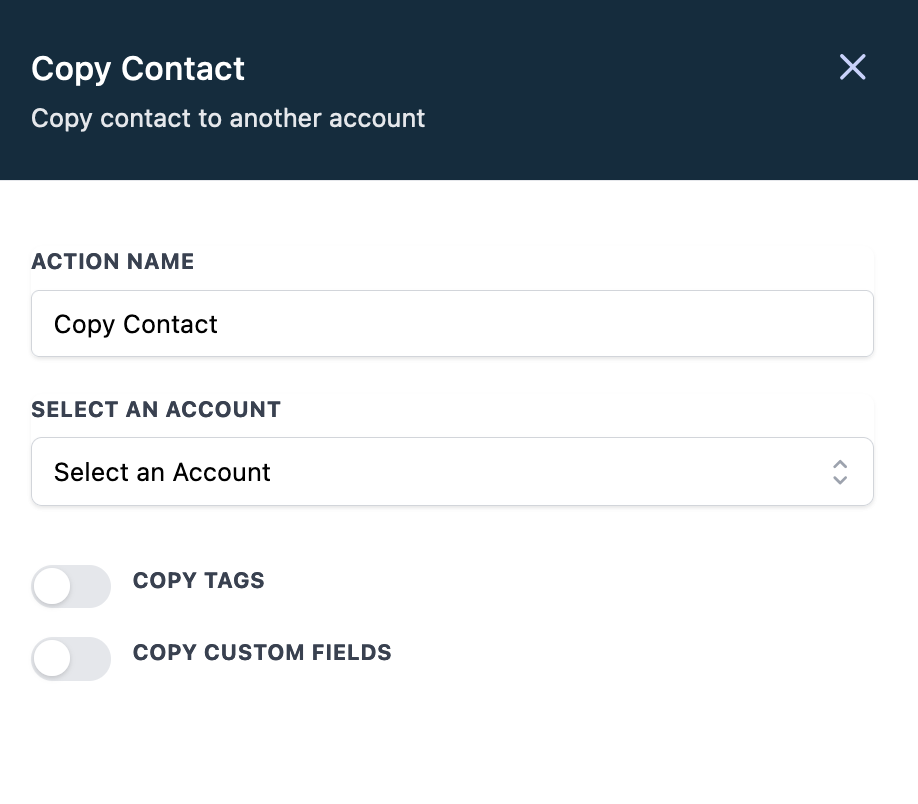

Copy Contact
Copy Contact enables copying contact to another account.

Select an Account
The contact will be copied to the selected account. Only the accounts that the logged in user has access to will be listed here.
Copy Tags
If enabled, contact tags will be copied to the selected account.
Copy Custom Fields
If enabled, contact custom fields will be copied to the selected account. The custom field value will be copied only if that field exist in the selected account.